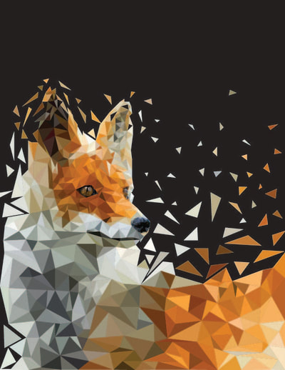
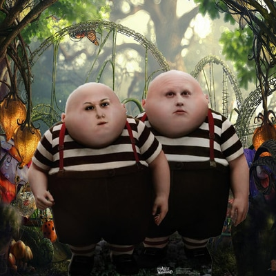
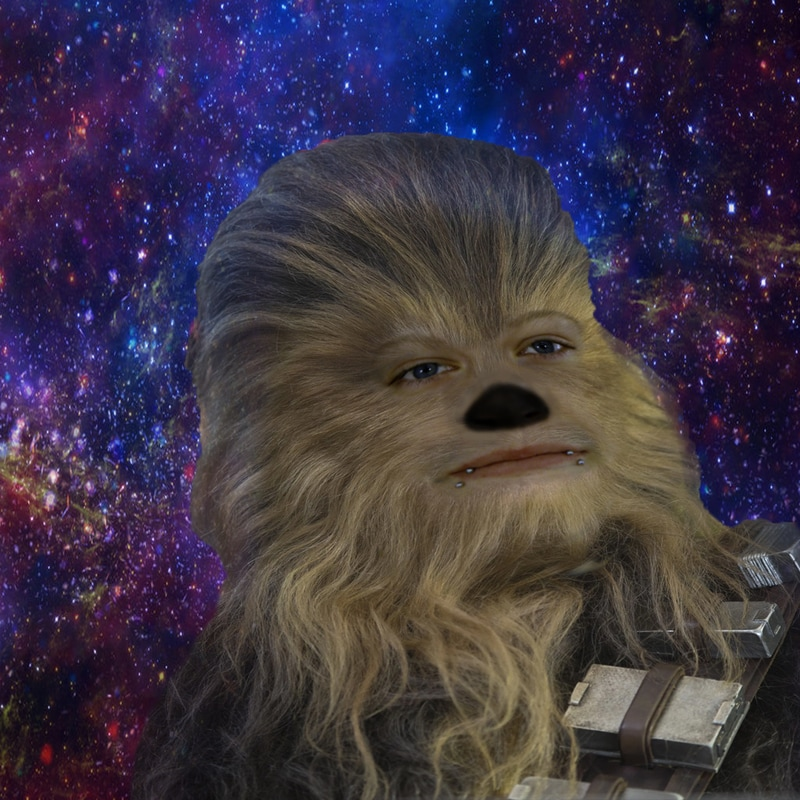

My Best Computer Work

Above is a Geometric Fox that I created in Computer
Graphics & Design 2. I started with an outline of a fox and used different
tools to create this Image on Adobe Photoshop.
This is a
link to my first website. I created this to be an online resume for my homeroom teacher Mark Schlicting.
Above is my face on tweedle Dee from Alice in Wonderland.
I took a photo of my face and used dfferent tools/ filtering to get my face to match up.
I hope to improve my skills and become
more tachtically proficcient in Javascript, hmtl, and computer graphing.
